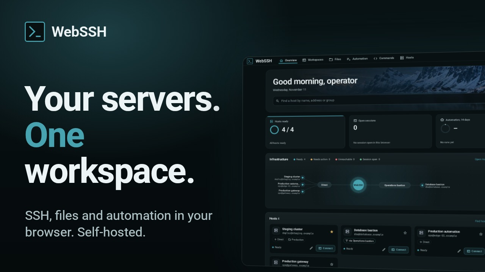

WebSSH 3
Your workspace, at a glance.
Current browser captures with prepared example data. A silent visual tour of the version 3 candidate; no production hosts or credentials are shown.


Preview all eleven themes

Narrated tour
A two-minute walkthrough of version 3 with English narration and subtitles.

Chapters and full transcript
Follow the tour at your own pace.
The hosts, sessions, files and terminal output are prepared examples. The last chapter explains the local setup. Chapter links open the corresponding moment on YouTube.
What is WebSSH?
A terminal here, a file browser there, notes somewhere else. Working on your servers usually means juggling all three.
WebSSH puts them in one workspace, in your browser, running on a machine you control.
Overview and themes
This is the overview. At a glance you see which hosts are ready, what's open, and how your last automation runs went.
The map shows how you reach each machine, including the ones behind a jump host. If something needs a look, like a host key you haven't verified, it shows up here.
And the layout is yours: move panels, resize them, hide what you don't use. And there are eleven themes to choose from.
Find and add hosts
Adding hosts is quick. Name a network range, and WebSSH looks for SSH servers in it, only when you ask.
Pick one, and the form is already filled in. Choose a saved key, route through a jump host, and you're connected.
Terminal workspace
Then there's the terminal, where you'll spend most of your time. Every connection gets a tab.
Put sessions side by side, and keep notes, files and diagnostics next to the shell they belong to. And with tmux on the server, a session keeps running when you close the browser.
Files and transfers
Files sit right next to the terminal. Two panes, each with its own server and path.
Open a file, change a line, and review the diff before anything is written back. Bigger transfers go into a queue, and can run straight from one server to another.
Automation
For the things you do again and again, build a workflow. A few commands, in order, with the hosts they should run on.
Run it now, or put it on a schedule. Afterwards you see the result per host, and where the hosts differ.
Sign-in and security
All of it sits behind your own sign-in. Passkeys, an authenticator app, or your identity provider.
Host keys are checked before you connect, private keys are stored encrypted, and every account has its own hosts, keys and settings.
Install with Docker Compose
Want to try it? Download one Compose file, run one command, and it's up on port 5000.
For anything facing the internet, follow the production guide first. WebSSH is open source.
You'll find everything at getwebssh. com.
Make it part of your setup.
Explore the features or choose a deployment for your network.